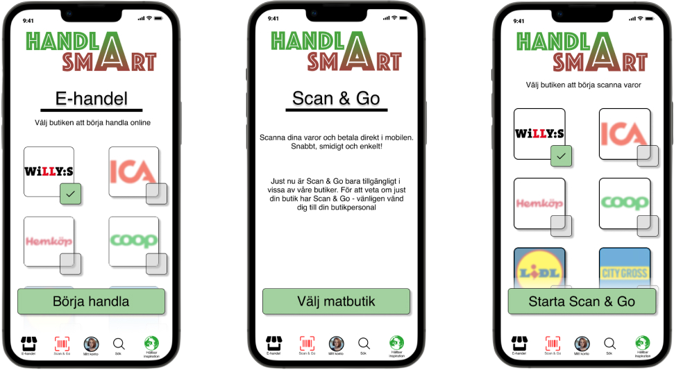

About project
During the first year of education at the Interaction design course we had a group project to create a full idea of a yet non-existent website or app based on sustainability problem. My group and I chose food related sustainability problems in the shopping system. We decided to create an app where people can have honest and transparent information about products they buy in different stores so that they can have full awareness. The idea was to motivate users to become more curious about products they purchase every day and thereafter buy them more sustainably. Second most important thing about the app was to make it as fun and easy to use as possible so that people of any age and technical knowledge can use it without any issues. The biggest inspiration for our app became food market Willys.
Process
Brainstorming during most of workshops for as many ideas as possible, researching every food related website, app and store for inspiration, checking them with WCAG guidelines, affinity mapping for the basic app functions, interviewing people and creating Behaviour types for better understanding of possible app purposes, prototyping in Figma, creating scenarios and user testing according to them for better understanding of problems and lacks we can fix next release.
Some of the problems we met and their solutions
The first problem was the big variety of brands of products different stores have. While researching swedish stores, their apps and websites for inspiration we realised that each store brand has their own food brand which leads to difficulties in gathering all of them under the same filter. The decision was to make our app to hypothetically cowork with the biggest swedish food markets. Users are able to choose the right brand of the store before they shop.
Another problem - the better the product, the more it costs, which is playing against our idea to motivate people to buy more responsibly. A lot of young people don't have big budgets due to studies or age or etc. The idea was born to create some kind of points in the app which can eventually be used instead of money. The user can get them by using the app and can even transfer them between each other. In this case if you don't have enough physical money to buy local products, that doesn't have to be transferred from the other end of the world- you can ask someone for some extra points! This particular idea was left as an update for the second release.
My conclusions
This was my first UX/UI group project, which showed me that it is much easier to get good ideas and be creative in a group than alone. All process becomes faster and more productive. It was a great experience.